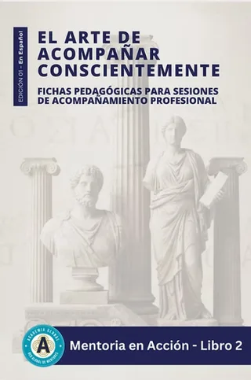
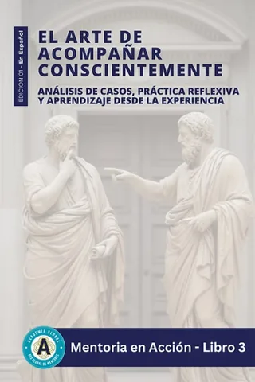

Herramientas de mentoría
Contenido teórico/práctico de numerosas herramientas de mentoría.
Cuanto más aprendes, más consciente se vuelve tu acompañamiento y mayor es tu capacidad de generar transformación en otros.
¿Prefieres comenzar acompañado/a?
Para iniciar este recorrido y si lo consideras necesario, nos ponemos a disposición para que tengas una videollamada con uno de nuestros mentores docentes que pueda explicarte el proceso de formación. Solicita la entrevista por WhatsApp: +54 9 341 5421624.
Además, el primer jueves de cada mes, a las 15 h (hora de Argentina), realizamos encuentros virtuales para ver algunas de las 70 herramientas de estos manuales. Consulta la agenda y regístrate para recibir el acceso.
Te invitamos a navegar por los contenidos de este programa
Y con suma consciencia y responsabilidad, lee con detenimiento y profundiza con investigación aquellos temas que más sentido te hacen para tu práctica profesional.
La intención de este contenido es acercarte algunas de las herramientas que son utilizadas por tus colegas de la RGM y despertar tu interés para que las investigues, las practiques y luego las incorpores a tu práctica profesional de la mentoría.
La tríada funcional de la mentoría consciente
En el ejercicio profesional del acompañamiento humano no alcanza con tener buenas intenciones ni con acumular herramientas. Lo que verdaderamente distingue a un mentor, coach, asesor o consultor profesional es el criterio con el que decide cómo, cuándo y desde qué rol intervenir.
La serie Mentoría en acción nace para responder a esa necesidad. No es una colección de técnicas ni un manual de recetas: es una arquitectura formativa diseñada para acompañar la maduración real del profesional del acompañamiento. Esta tríada de guías propone un recorrido completo, coherente y exigente, que articula criterio, acción y reflexión, tres dimensiones inseparables de una práctica consciente.

Libro 1 – Fundamentos y mapa de herramientas
El primer libro ofrece el marco conceptual y ético desde el cual las herramientas adquieren sentido. Claridad sobre las disciplinas del acompañamiento, el rol profesional desde el cual interviene y el mapa de herramientas, organizado por finalidad y nivel de profundidad. No enseña a «hacer», sino a comprender desde dónde se acompaña: evita la confusión de roles, la intervención inapropiada y el uso mecánico de recursos.

Libro 2 – Fichas pedagógicas para la sesión
El segundo libro se sitúa en el corazón de la práctica: la sesión de acompañamiento. Las herramientas se presentan como fichas pedagógicas, diseñadas para clarificar su finalidad, delimitar su alcance, explicitar cuidados éticos y sostener el discernimiento profesional en tiempo real. No son instrucciones cerradas, sino dispositivos de decisión consciente: acompañan al mentor en el momento más delicado, cuando intervenir… y cuando no hacerlo.

Libro 3 – Análisis de casos y práctica reflexiva
El tercer libro aborda un punto clave de la mentoría experta: la capacidad de reflexionar sobre la propia práctica. Se aprende a analizar casos reales, explicitar decisiones y límites, transformar experiencia en aprendizaje transferible y consolidar un método propio, ético y consciente. Convierte la práctica en conocimiento, y el conocimiento en madurez profesional.
Uso consciente de herramientas en procesos de mentoría
Herramientas de mentoría: Tomo I y Tomo II. El Tomo III se utiliza en la formación de Análisis de casos. Los siguientes videos complementan la lectura de las guías mencionadas.
Fundamento: la herramienta no es el centro
Objetivo
Desinstalar la idea de que «más herramientas = mejor mentor».
Contenido conceptual
Basado principalmente en:
- Claridad de rol
- Disciplina vs técnica
- Principio de adecuación
- Herramienta como medio, no fin
- Criterio profesional como eje
Resultados esperados
El/la mentor/a debe:
- Entender que la herramienta no reemplaza el criterio.
- Diferenciar mentoría de otras disciplinas.
- Comprender que el eje es el proceso, no la técnica.
El mapa de herramientas: comprender las categorías
Objetivo
Que el mentor comprenda la lógica de agrupación (A a G) y aprenda a leer el proceso antes de elegir la herramienta.
Contenido conceptual
Repaso estructurado de los 7 grupos:
- A – Propósito y sentido
- B – Autoconocimiento
- C – Emociones y vínculos
- D – Discernimiento
- E – Acción
- F – Desarrollo profesional
- G – Integración sistémica
Resultados esperados
El/la mentor/a debe:
- Identificar qué grupo corresponde a qué momento del proceso.
- Evitar usar herramientas de acción cuando el proceso necesita sentido.
- Entender que no hay secuencia rígida, pero sí lógica procesual.
Cómo usar la herramienta sin que la herramienta use al mentor
Objetivo
Entrenar el discernimiento operativo. Aquí se trabaja:
- Cómo introducir la herramienta en sesión.
- Cómo explicar su propósito.
- Cómo leer resistencias.
- Cómo interpretar resultados sin sobrediagnosticar.
- Cómo cerrar la herramienta e integrarla.
Contenido conceptual
- La herramienta como facilitador.
- El momento adecuado.
- Límites éticos.
- Riesgos de intervención excesiva.
- Cuándo detener o abandonar una herramienta.
Resultados esperados
El/la mentor/a debe:
- Saber presentar la herramienta.
- Saber leer lenguaje verbal y no verbal.
- Saber integrar lo que emerge sin forzar conclusiones.
- Saber cuándo derivar.
Integración: la herramienta dentro del proceso completo de mentoría
Objetivo
Que el mentor no vea herramientas aisladas sino procesos. Aquí se trabaja:
- Cómo elegir herramienta según etapa del proceso.
- Cómo articular grupos distintos.
- Cómo evitar saturar al mentorado.
- Cómo revisar lo trabajado en sesiones anteriores.
- Cómo hacer seguimiento.
Contenido conceptual
- Herramienta como parte de arquitectura procesual.
- Secuencia lógica vs improvisación.
- Revisión post-sesión.
- Aprendizaje del mentor a partir del uso.
Resultados esperados
El/la mentor/a debe:
- Diseñar un mini proceso de 4–6 sesiones.
- Justificar la elección de herramientas.
- Mostrar coherencia entre propósito y recurso.
- Aplicar el principio de adecuación.
Cada nuevo conocimiento expande tu preparación
Aumenta tu capacidad de asistir con mayor claridad, responsabilidad y profundidad.